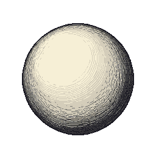
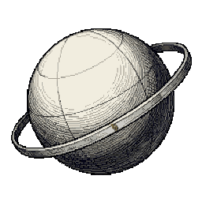
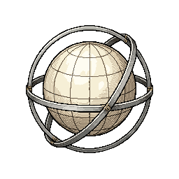
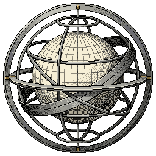

01 · ORIGEMCentelha
O globo puro da referência inicial. A força está no volume e nas hachuras, com a face clara e sem adereços.

02 · PRIMEIRA ÓRBITADespertar
Um único anel revela a primeira relação com o cosmos. A grade começa a tornar a rotação perceptível.

03 · ÓRBITAS CRUZADASConvergência
Arcos em planos diferentes, profundidade e vãos claros entre as peças. É a ponte para a forma armilar.

04 · FORMA COMPLETAPlenitude Armilar
Equador, meridianos e polos retomam a referência final. Pequenas marcas douradas destacam as junções.
O globo também gira
16 quadros gerados + pose inicial. O segundo teste explora a rotação da terceira evolução, preservando sua superfície abstrata.
Carregando estudo animado…
Estudo, ainda não pronto para o jogo: a IA eliminou os continentes da primeira tentativa, mas varia a forma dos anéis e a proporção do globo. Para produção, separar as camadas e estabilizar a geometria.
Ajustes que valorizariam a evolução
- Mesmo núcleo, complexidade crescente. Preservar a esfera reconhecível; acrescentar eixos e anéis em cada marco.
- Ouro com função. Reservá-lo a pontos cardeais e junções; manter o corpo em marfim e prata, com bons vãos sobre o fundo escuro.
- Rotação por profundidade. Globo em 24 s/volta, equador em 16 s, meridiano no sentido contrário em 20 s e aro externo em 32 s são bons pontos de partida.
- Luz e silhueta estáveis. Mover a textura sobre o globo, sem girar a sombra como um disco. Validar a leitura em 128 px e respeitar movimento reduzido.
PNG transparente · 256 × 256 por conceito · propostas visuais, ainda sem regra de desbloqueio.